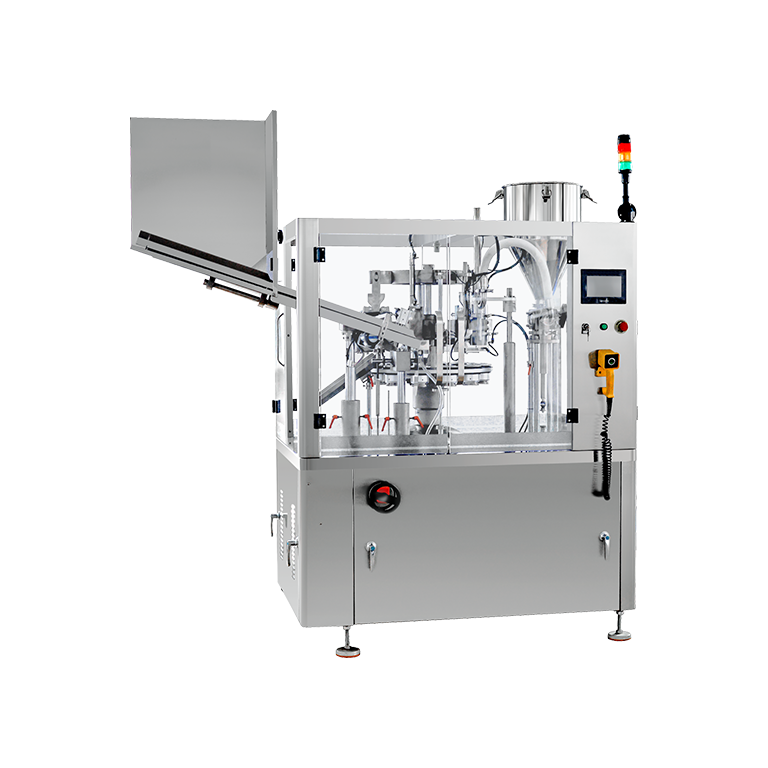

SKU: SAL-M-30
Tube Filling and Sealing Machine
| Sub-Category | Spices Processing |
| Model | TF-80 |
| Brand | KMG |
| Material | Stainless Steel SS 304 |
The Tube Filling and Sealing Machine is an automated solution used for filling creams, gels, ointments, and other semi-solid products into tubes and sealing them securely. It is widely used in cosmetic, pharmaceutical, and personal care industries for products like toothpaste, face creams, lotions, and medicinal ointments. The machine ensures precise filling with minimal wastage and maintains high hygiene standards throughout the process. It is equipped with advanced sealing mechanisms such as hot air sealing or ultrasonic sealing, which provide strong and leak-proof closures. The system supports different tube materials including plastic, laminated, and aluminum tubes. Its robust design, easy operation, and low maintenance make it suitable for continuous industrial use. The Tube Filling and Sealing Machine enhances production efficiency while maintaining consistent product quality and packaging standards.
Rate this product:
Click a star to submit your review